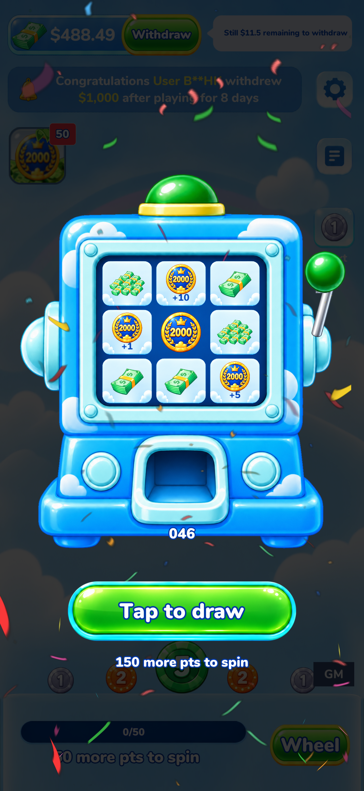
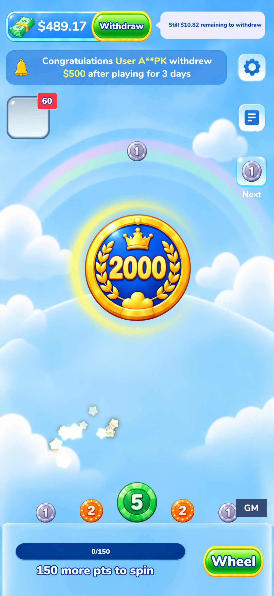

副本工程 11_UnityReskin。原版抽奖先播放摇杆，完成后轮转奖格。合成最高面值时，庆祝动画中的旧硬币改为你提供的蓝底金边 2000 筹码。

六张实际 Unity 渲染姿势；拖动查看。播放为方便对照的慢速姿势切换，真实动作时长见上方。

替换骨骼特效中的 C1 硬币层。光圈、星光、放大及飞入计数器的原有流程保留。
Unity 2022.3.62f3c1 · 4240 项运行断言 · 独立测试存档
验证结果 JSON · 原版证据、实现与美术来源